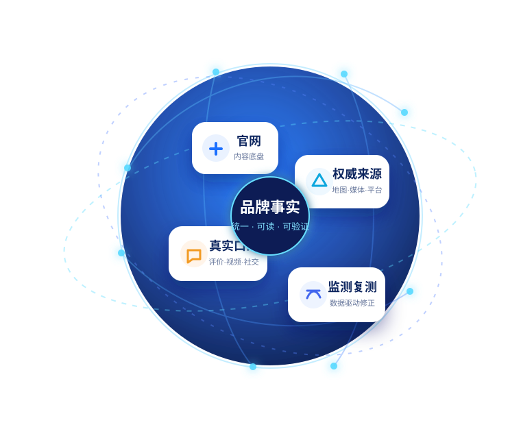

围绕真实业务，建设“官网内容底盘 + 多来源可信信息 + 真实口碑信号 + 持续监测复测”的品牌信息网络。

当企业信息零散、官网不可读、第三方来源不足时，AI可能找不到品牌，或采用过期、冲突的信息。
官网只有宣传语，缺少服务范围、条件与FAQ。
名称、业务和联系方式在不同来源中冲突。
缺少问法清单、来源记录和修正依据。
三档方案的差异以同序对比表为准，避免把长期运营误解为一次性交付。
用“整理前 / 建设后”的结构示例说明交付逻辑；不展示虚构品牌、客户数量、排名或效果百分比。
本站不会收集或提交您的信息。正式电话、微信、邮箱和二维码将在上线前由品牌方提供，并统一写入配置文件。
配置真实联系方式后，此区域可改为 mailto、复制微信号或经确认的静态表单服务。